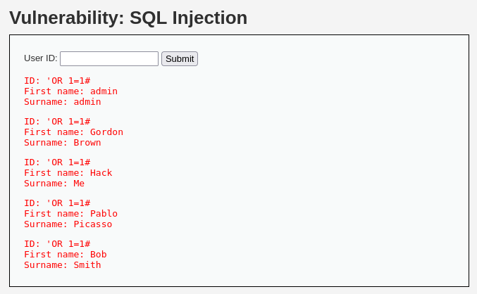

SQL injection is a computing technique in which an attacker injects malicious SQL code into an input that is then executed by a database. In practice, the goal is to exploit query handling flaws to gain unauthorized access or damage data in the database.
The first level of DVWA is low. We can notice a simple page that if you give an input 1 to 5. It will return an output of a diffrent account.
like in this exaple :
Now our goal is try to retrive all the accounts. The first script that we could try it's this :
There are three diffrent method to retrive all the data to a database (diffrent for the diffrent database). These attempts use the single quote character (') to close any running strings in SQL queries and then add additional clauses. In the example, 1=1 is always true, so the goal could be to gain unauthorized access or manipulate the query result.If we try to use 'OR 1=1#.
We have solved it :)))))
In this level we can see a particular thing....a option box that we can choose between 1-5.
like in this example :
We can't insert into this option box our malicious code. For fixing this problem we could use a proxy (i'm using burp suite). If we analyze the request.
the request :
We can notice that in line 23 we can modify and try to insert our malicius code with diffrent attempts.
like in this example :
Amazing it worked! Now if we modify our malicious code we can return the credential of users
like in this example :
UNION: The UNION statement in SQL is used to combine the results of two or more queries into a single result set. Columns in the results of different queries must match in type and number.
select user, password from users: This part of the query appears to be trying to extract information from the "users" table. Specifically, it's trying to get the "user" and "password" columns.
--: This is a SQL comment. Anything after "--" on the same line is considered a comment and is not executed as part of the query. In this case, it appears to be an attempt to comment out the rest of the query to hide or disable it.
We have solved it :)))))